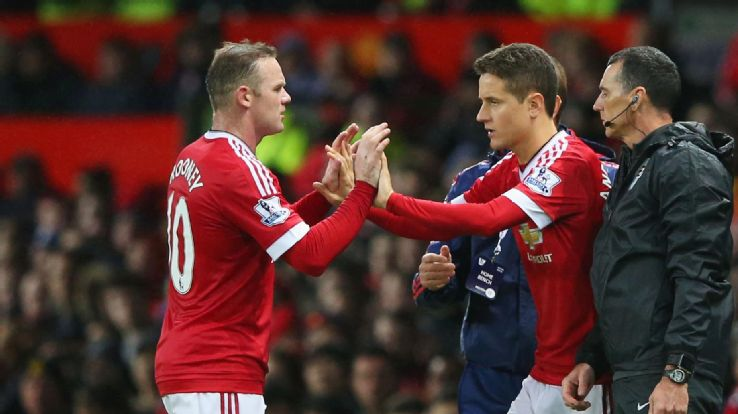
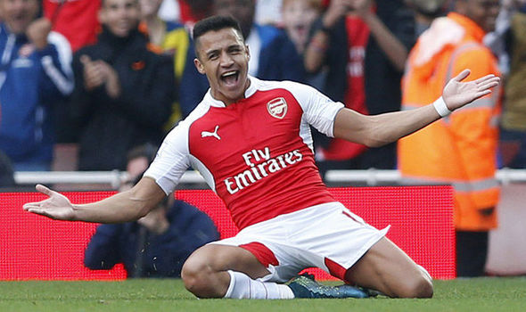

Jesse Lingard takes his Manchester United chance on a good weekend

Manchester United have gone 555 minutes -- more than nine hours -- since they last conceded a goal. That's the best defensive spell for the club since a run from December 2004 to January 2005.
Yes, Edwin van der Sar went 1,311 minutes without conceding in 2008-09, but those minutes were all in league matches; United conceded several cup goals during that run, not that Van der Sar played in all of those games.
United's defence, with David De Gea in goal behind it, has been a major positive of this season, and this latest run stretches back to Seydou Doumbia's goal for CSKA Moscow on Oct. 21.
At the other end, only four goals have been scored four times over the same period. One was an equaliser by Anthony Martial on that freezing night in Moscow, while another came from Wayne Rooney in the return game against CSKA, and there were a further two on Saturday against West Brom.
Two wins in two games, plus the Rooney goal, have lifted the pressure off the United captain and his team. For all the valid criticism of United's often joyless football and Rooney's below-par performances, his standing remains high among his peers. I spoke to Xavi about Rooney last week for a forthcoming ESPN FC interview.
"Rooney is the leader, a great player, a great player," Xavi said. "The top level."
When it was put to Spain's greatest-ever player that Rooney's form had dipped, he replied:
"A little, but he scored an important goal [vs. CSKA]. He'll be back. Footballers go through stages when things don't go well, it might be a few months; look at [Andres] Iniesta last season. People were critical of him; they said he wasn't the same player. What happened in the Champions League final, the biggest game? He was fantastic. But if you score an important goal, then your confidence can soar."
READ MORE
Transfer Lens: Man Utd prepare £53m bid for 26-yr-old winger

For reasons unknown, Arsenal superstar Alexis Sanchez continues to be linked with Premier League giants Manchester United.
According to Don Balon, Sanchez, who has been targeted by Real Madrid, will reject the chances to join the Galacticos because of his past ties with Barcelona, but he considers a move to Old Trafford as a “big step” in his footballing career.
Manchester United manager Louis van Gaal needs one or two world class wingers in his side, and sees Sanchez as the perfect fit for the Old Trafford club.
The Chilean joined Arsenal for £35m from Barcelona in 2014 and has quickly established himself as one of the key players for the Gunners, and one of the league’s standout talents.
Last season, he scored 26 goals for his club and country, while this season he has managed 10 goals so far in all competitions.
It has been an interesting season for the Chilean, who has badly struggled for consistency.
He looked tired and out-of-form at the start of the season (probably because of his participation in the Copa America in the summer) and took nine games to score to his first goal for Arsenal. It came against Leicester City towards the end of September.
He scored a hat-trick in that match, and then added another seven goals in the next five games. Just when everyone thought he has regained his old form, Sanchez seemed to have lost that goal scoring tough again, as he failed to score in his last six games.
Anyway, United are preparing a massive £53m offer for Sanchez, as Van Gaal is keen to sign a player who can add threat from the wings.
With Rooney’s best years are probably behind him, United need a world class attacker in their ranks.
Sanchez is 26 and has 5-6 best years ahead of him. The question is why will he leave Arsenal to join Manchester United? He seems to be enjoying his football at the London club and Arsenal are equally interested (reportedly preparing a new contract) in keeping him at the club.
I won’t say the transfer will never happen as you simply cannot predict the future, but it is highly unlikely that Arsenal will allow one of their best players to leave to their rivals.